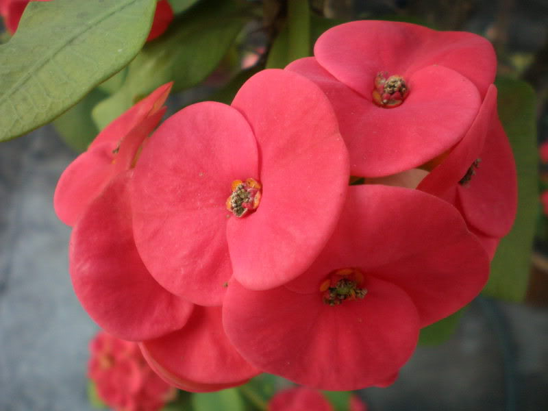

Hoa bát tiên

Cây Xương Rồng Bát Tiên hay còn có tên cây Hoa Bát Tiên, cây Hoa Mão Gai. Tên khoa học là Euphorbia milii. Cây Xương Rồng Bát Tiên có gai, thân màu trắng mốc, dáng hoa đẹp nhiều màu sắc như vàng, hồng, đỏ, trắng. Khi cây nở hoa sẽ tạo cho một không gian xung quanh trở nên rực rỡ và luôn tươi mới.